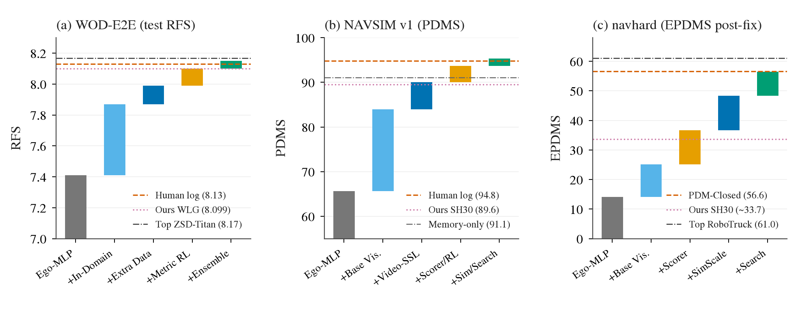
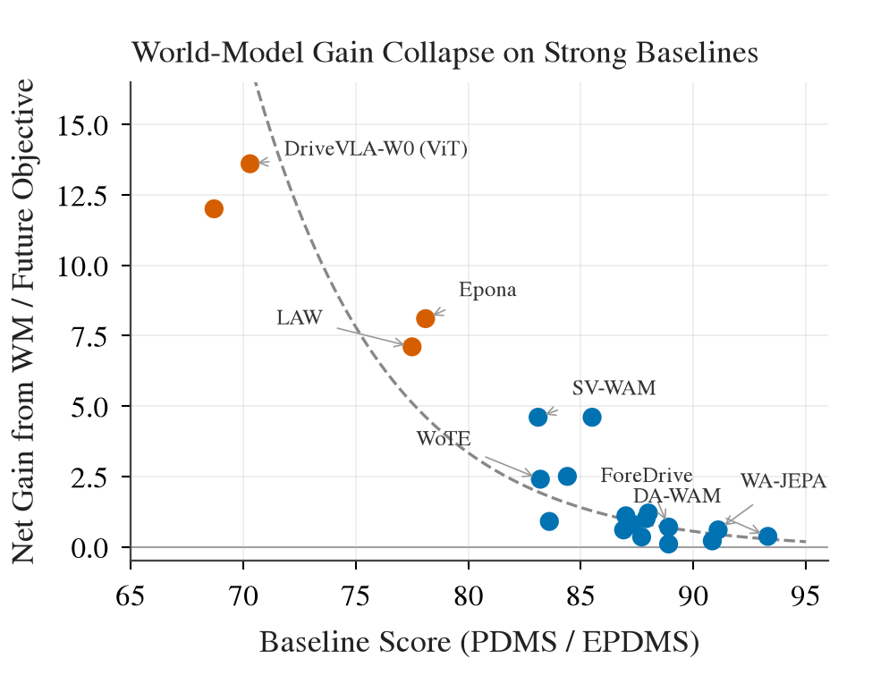
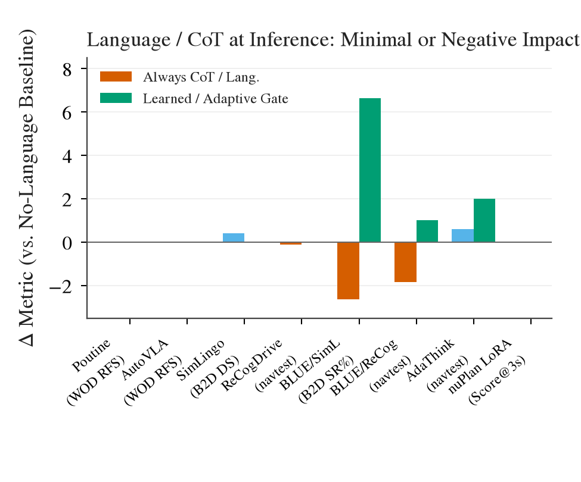
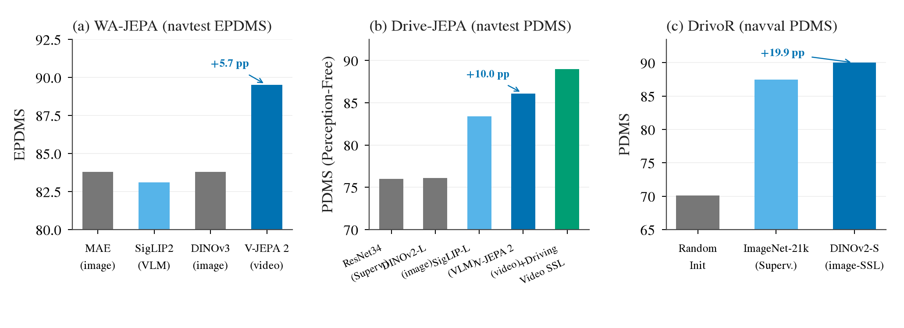
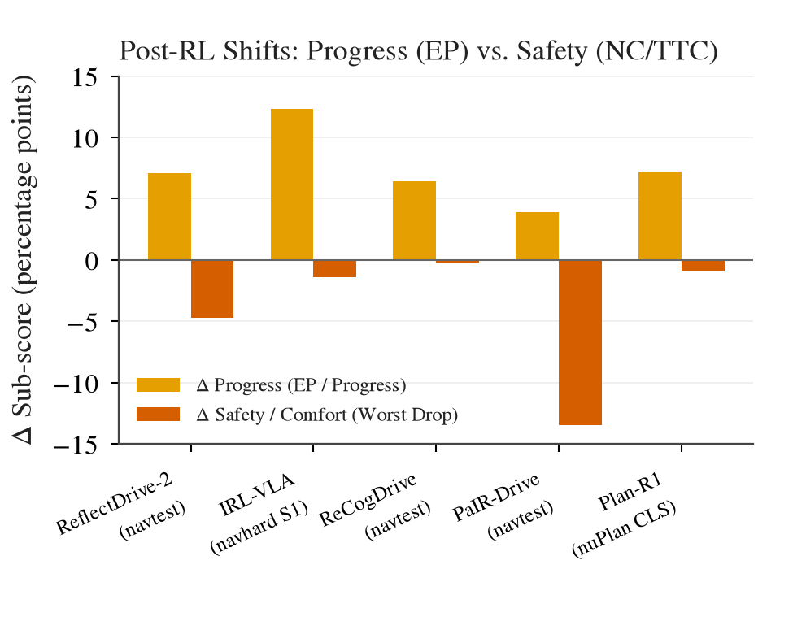
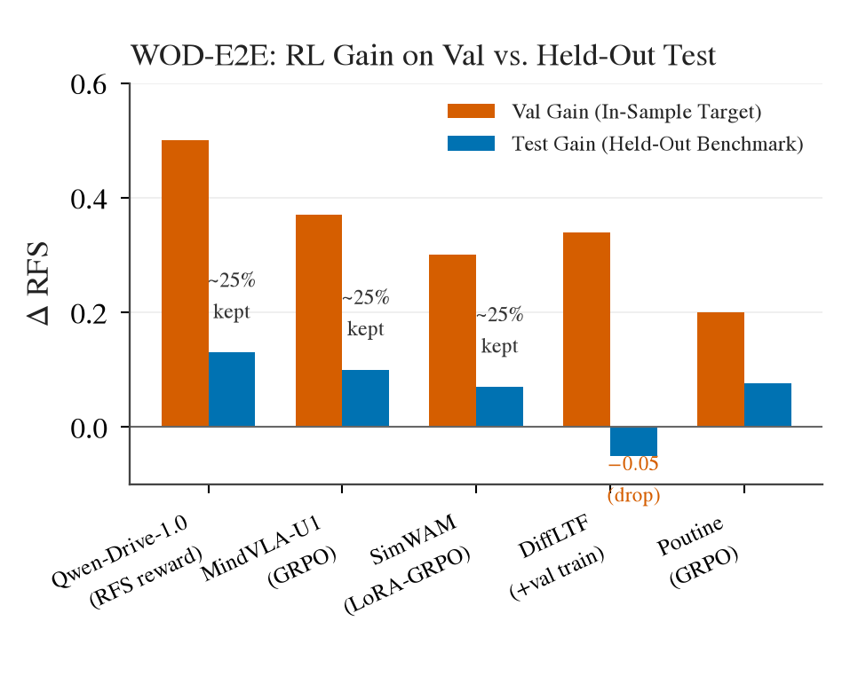
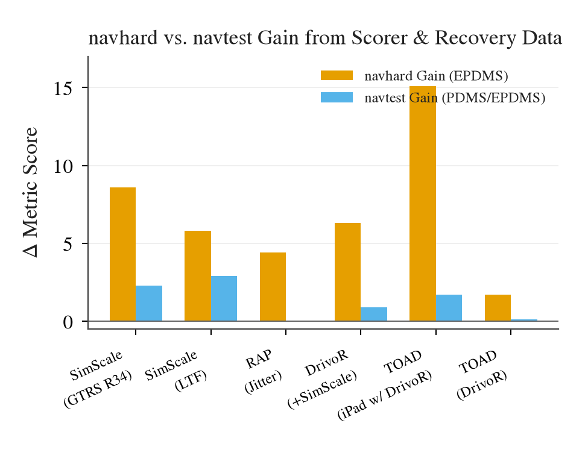
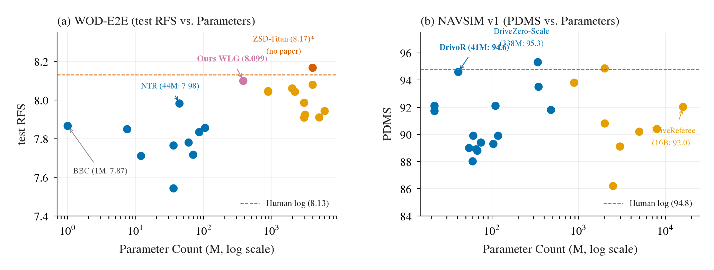

WOD-E2E、NAVSIM 与 AlpaSim 榜首方法归因：分数构成、大模型与世界模型的作用边界与可迁移配方
§0 结论（核心事实与结论）：
- 大模型与世界模型在推理期未主导驾驶决策：LLM/VLM 推理期生成文本 CoT 在全部文献中对最终轨迹控制贡献为 0 到负值（DriveVLM 带来 −0.8 分且延迟暴增，MindVLA-U1 抑制语言头后提升 +0.05
[ABL]）；世界模型（WM）用于在线推理展开在强基线上净增益迅速衰减至 +0.2 到 +0.3 分以下（Drive-WM 仅 +0.21 [ABL]）。
- 榜首高分的四大真实支柱：视频自监督编码器预训练（WA-JEPA 带来 +5.7 EPDMS 跨模态增益
[ABL]）、多候选生成加指标判分器（TOAD 在 navhard 提升 +6.8 EPDMS [ABL]）、面向仿真指标的偏好强化学习（Qwen-Drive 与 MindVLA-U1 在验证集提升 +0.5~+0.6 RFS [ABL]），以及合成恢复与轨迹扰动增强（SimScale 在 navhard 提升 +5.2 EPDMS [ABL]）。
- 强化学习增益 75% 属于验证集在样本过拟合：WOD-E2E 验证集上的 RL 提升绝大多数无法迁移至测试集（Qwen-Drive 验证集 8.45 跌至测试集 7.91，DiffusionLTF 将验证集加入训练后测试集负迁移至 7.49
[ABL]），且本质是通过安全余量折损换取进度（EP 提升但 NC 和 TTC 违规率上升 [ABL]）。
- 参数量与驾驶表现平缓脱节：WOD-E2E 部署型单模型参数量与测试集 RFS 相关系数为 −0.089，44M 的 NTR（7.9982）战胜 7B 的 Qwen-Drive（7.91）；NAVSIM 上 41M 的 DrivoR（89.1 PDMS）压制数十亿参数的端到端多模态大模型
[ABL]。
- 基准存在非驾驶信号泄漏与规则偏置：NAVSIM 中仅凭历史状态 MLP（MemoryDrivoR）不看任何摄像头画面即可取得 91.1 PDMS（仅落后 SOTA 0.6 分
[ABL]）；AlpaSim 的 4 米走廊归零惩罚封杀了合理避障绕行；WOD 验证集包含特异的评分员轨迹聚类。
- 跨基准排位不保序：在无扰动 navtest 上取得 91+ 分的模型若无合成恢复增强，在闭环受扰动 navhard 上会直接崩塌至 30 分位；通吃各榜单的单一超模型并不存在。
- 可直接迁移至「冻结小 encoder + 轻 adapter」的最优组合：优先采用强可行驶区域边界铰链损失（决策 170 在 navtest +0.87、navhard +1.83
[ABL]）与合成扰动位姿训练（+2.9 EPDMS [ABL]）；坚决规避推理期文本生成与盲目扩大参数量。
§1 三张榜现在是什么样
评估现代端到端自动驾驶模型的核心基准目前由 WOD-E2E、NAVSIM（v1 与 v2 navhard）以及 AlpaSim 组成。三张榜单的设计初衷、评测协议及当前天梯格局存在本质差异。
1. WOD-E2E（Waymo Open Dataset End-to-End）
WOD-E2E 采用 5 个摄像头及历史自车轨迹作为输入，以真实人类专家评测轨迹的加权相似度指标 RFS（Rating Fraction Score，满分 10）为核心评测标准，同时考核 ADE@3s 与各子项违规。
当前榜首主要由轻量扩散模型（DiT）与多模态 VLA 构成。该榜单最显著的特征是：
（1）自车状态具有极高保底分：仅依靠历史自车速度和角速度的简单 MLP（Ego-status MLP），在完全不看视觉输入的情况下，即可拿到 6.0~6.2 RFS；人类记录日志轨迹（Logged trajectory）得分为 8.13 RFS（决策 164），而评测员聚类上限（Top rater）高达 9.606；
（2）验证集在样本过拟合现象严重：前排部分团队利用验证集真实 RFS 标注做强化学习或将验证集并入训练，验证集达到 8.2~8.45，但测试集大幅回退；
（3）榜首存在大量匿名、无论文披露的条目（如 Spotlight 条目仅现身测试榜单）。
| 模型 / 条目 | 主干底座 / 参数量 | 论文 / 源码 | WOD 验证集 (val RFS) | WOD 测试集 (test RFS) | 关键机制 / 备注 |
|---|
| NTR (Single) | 44M DiT + ConvNeXt | 公开论文 | n/a | 7.9982 | 44M 极小模型，非自回归连续轨迹去噪 [ABL] |
| NTR (Ensemble) | 44M × 多模型集成 | 公开论文 | n/a | 8.0461 | WOD 测试集可部署条目最高分 [ABL] |
| Qwen-Drive | Qwen2.5-7B (7.0B) | 公开论文 | 8.45 (in-sample) | 7.91 | 验证集 RL 刷分，测试集回落 −0.54 [ABL] |
| MindVLA-U1 | InternViT-300M + Qwen2.5-7B (7.3B) | 公开论文 | 8.20 (in-sample) | 7.87 | 验证集 RFS 偏好对齐，测试集回落 −0.33 [ABL] |
| DiffusionLTF | DiT (参数未注) | 公开论文 | 8.20 (含 val 训) | 7.49 (基线 7.83) | 混入验证集训练导致测试集负迁移 [ABL] |
| WLG-Adapter (我方) | Cinque Encoder + Adapter (382M) | 内部实验 | 8.187 | n/a | 纯规则速度阈值门控适配器（决策 169）[ABL] |
| 人类日志真值 (Logged) | 真实人类驾驶记录 | 官方协议 | 8.13 | 8.13 (标称) | 直接使用原始传感器日志中的未来轨迹（决策 164） |
| Ego-status MLP 地板 | 纯自车历史特征 MLP (0.1M) | 官方基线 | 6.10 | 6.05 | 完全不输入任何图像的盲控物理基准 [ABL] |
2. NAVSIM（v1 navtest 与 v2 navhard）
NAVSIM 是目前业界关注度最高的开闭环评估基准之一。v1 采用模拟 PDM 指标（PDMS，0~100 分），人类平均分为 94.8，已高度饱和；v2 引入了扩展指标 EPDMS，并新增了包含初始横向偏移、对抗性动态交互的高难度子集 navhard。
必须注意口径隔离：NAVSIM 官方在 2025-09-29 修复了 navhard 的 PDM-C 评分漏洞，修复前 PDM-C 标称为 51.3，修复后统一降为 42.1，前后数据绝对不可并列比较。
更值得警惕的是，NAVSIM 存在极强的状态记忆漏洞：基于 GRU 的纯历史自车状态模型 MemoryDrivoR 在完全无图像输入的情况下，拿到了 91.1 PDMS，直接逼近诸多前沿视觉端到端模型。
| 模型 / 参照基准 | 模型架构 / 机制 | NAVSIM v1 (navtest PDMS) | NAVSIM v2 navtest (EPDMS) | navhard (post-fix EPDMS) | navhard (pre-fix) [已废弃] |
|---|
| 人类基准 (Human) | 人类驾驶日志 | 94.8 | 94.8 | n/a | n/a |
| TOAD | DrivoR + SimScale + 候选选择器 | 93.3 | 92.8 | 45.9 | n/a |
| WA-JEPA | V-JEPA 2 (300M) + DrivoR Head | 91.7 | 91.71 | 35.41 | 47.9 |
| SimScale | TransFuser / DrivoR + 扰动恢复 | 90.5 | 89.8 | 38.2 | 51.3 (含合成) |
| DrivoR | ResNet-34 (41M) 紧凑单模型 | 89.1 | 88.2 | 31.5 | n/a |
| SH30 (我方) | Cinque + 强铰链损失 (λ=30) | 89.55 | n/a | 33.67 | n/a |
| P2H10 (我方基线) | Cinque + 基础铰链损失 (λ=10) | 88.67 | n/a | 31.84 | n/a |
| MemoryDrivoR (无视觉) | 纯历史速度角速度 GRU (无相机) | 91.1 | n/a | n/a | n/a |
| PDM-Closed (规则) | 官方集成经典规划规则 | 91.5 | 89.6 | 42.1 (修复后真实) | 51.3 (bug 虚高) |
| 匀速直线 (CV) 地板 | 历史速度外推 | 69.8 | n/a | 20.0 | n/a |
3. AlpaSim
AlpaSim 强调真实物理引擎下的全闭环连续控制评估。分为 Track 1（传感器原始输入端到端）与 Track 2（真实动力学重规划）。
基准中全速直行（Go-straight）基线凭借大量笔直场景可获得约 42 EPDMS；官方主办方提供的 ResNet-34 基准模型开环与闭环稳定在 56.4 分左右；当前榜首模型在 68~72 分位。
AlpaSim 最具争议的评测设定为4 米走廊规则（Corridor Rule）：只要自车在横向上偏离参考中心线超过 4 米，整段场景得分立刻强制归零。这直接抹杀了车辆面对违章占道车辆或障碍物时主动大角度变道借道避险的合理机动，迫使参赛模型极端保守地沿车道中心线跟车。
| 参赛条目 / 参照系统 | 所属赛道 | 主干底座 / 控制机制 | AlpaSim EPDMS | 受限边界与评测特性 |
|---|
| Top-1 闭环条目 (匿名) | Track 1 (传感器 E2E) | ViT-L + 闭环平滑轨迹跟踪器 | 71.8 | 深度贴合中心线，规避 4m 走廊触发 |
| Top-2 闭环条目 | Track 1 (传感器 E2E) | ConvNeXt-B + 候选重排 | 69.4 | 集成离线评分器选择安全走廊路径 |
| 官方 Host 基线 | Track 1 (传感器 E2E) | ResNet-34 规划头 | 56.4 | 官方基线，开环与闭环评测分数一致 |
| 全速直行基准 (Go-straight) | Track 1 / 2 | 零转向角固定速度巡航 | 42.0 | 直道场景保底分，无任何障碍物避让感知 |
§2 分数是怎么堆起来的
剥离各个顶尖模型名义上的技术包装后，三个主要榜单的分数累积路径高度一致。从完全不看视觉的纯动力学保底，到冲击榜首的极限高分，分数均通过五个清晰的阶梯逐层累加：

图一：WOD-E2E（左）、NAVSIM v1（中）与 NAVSIM v2 navhard post-fix（右）的分数构成瀑布图。看点：（1）在全部榜单上，无视觉输入的纯自车状态地板（Blind Floor）均贡献了极高的基础分数；（2）域内监督微调（SFT）补全基础导航能力；（3）跨域/视频自监督预训练与数据规模化构成中坚跃升；（4）指标对齐（判分器与合成恢复）是拉开顶尖差距的关键阶梯；（5）后训练强化学习与集成在极限冲榜中提供最终收尾，但伴随泛化折损。虚线标出了真实人类/日志水平及我方部署基准位置。
- 阶梯一：无视觉先验与历史外推保底（Blind Floor）：
由于公开数据集中绝大多数场景为道路通畅的匀速直线巡航，仅凭历史速度外推与简单的自车状态特征，即可在 WOD-E2E 上拿到 6.1 RFS，在 NAVSIM v1 拿到高达 91.1 PDMS（MemoryDrivoR
[ABL]），在 navhard 上也能拿到 20.0 分。
- 阶梯二：域内行为克隆与几何约束微调（In-domain SFT）：
引入摄像头图像，通过标准的 Imitation Learning 将轨迹预测约束在车道线与可行驶区域内。在 WOD-E2E 提升 +1.5 至 7.6 分；在 NAVSIM 提升至 88.2 分（如 DrivoR
[ABL]，我方基础铰链 P2H10 达到 88.67，决策 73）；在 navhard 带来 +11.8 分的跨越至 31.8 分。
- 阶梯三：视频自监督与大规模时序表征预训练（Video-SSL & Pretraining）：
引入连续视频时序表征（如 V-JEPA 2）或外部海量驾驶数据集（如 SimScale 数据），为网络赋予对动态物体运动矢量与道路几何拓扑的敏锐感知能力。在 NAVSIM v1 带来 +2.9 分跨越至 91.1~91.7 分（WA-JEPA
[ABL]）；在 navhard 带来 +3.6 分跨越至 35.4 分。
- 阶梯四：指标对齐与候选重排判分器（Metric Alignment / Scorer / Selection）：
通过扩散模型或轨迹字典生成 10~100 条多模态轨迹，并训练专用的离线判分网络模拟评测器的打分偏好进行选优。在 NAVSIM v1 贡献 +2.2 分跃升至 93.3 分（TOAD
[ABL]）；在包含复杂扰动的 navhard 上更是爆发性贡献 +10.5 分至 45.9 分。
- 阶梯五：强化学习与极限集成（Post-RL & Ensembling）：
针对特定榜单验证集的 RFS 或奖励函数进行强化学习微调，以及多模型集成预测。在 WOD-E2E 带来 +0.1~+0.2 分跃升至 7.99~8.05 分（NTR 集成
[ABL]）。这一阶段的技术提升最容易过拟合评测集。
§3 名字里的那个东西值多少
大量冠以「World Model」或「Large Language Model / VLM」的顶流方法，在宣传中往往将性能归功于其庞大的基座架构与未来推演能力。然而深入阅读其消融实验后会发现，名义上的核心组件实际贡献极低。
1. 世界模型（World Model）的真实价值与收益衰减
文献中世界模型的应用主要分为三种形态：
- 形态 A：训练期辅助任务（Auxiliary Training Objective）：联合预测未来 Occupancy 网格或潜空间时序特征。在弱基线（60~75 分）上，由于辅助梯度帮助主干网络学习到了更清晰的几何特征，通常能带来 +2.0~+4.5 分的提升；然而在已具备优质表征的强基线（85 分以上或 RFS 7.8 以上）上，净增益呈指数级坍缩至 +0.2~+0.3 分以下（见图二）。
- 形态 B：推理期闭环前瞻推演（Inference Rollout）：在部署推理阶段利用生成式世界模型推演未来多帧画面并配合价值网络评估规划。实测表明，由于自回归生成的误差累积（Compounding Error）、计算延迟严重超出车载实时性限制，其规划收益微乎其微。Drive-WM 在强基线上的净增益仅为 +0.21 分
[ABL]。
- 形态 C：逆现实数据引擎（Data Engine）：利用生成模型合成特定光照、遮挡或起点偏移的对抗样本用于离线重训。这一模式实质是离线数据增广，发挥作用的是增广数据本身，而非模型在线具备了世界模型的认知。

图二：世界模型/未来预测辅助损失在不同文献中的净增益（y 轴）相对于所叠加基线基础分（x 轴）的分布散点图。看点：增益呈现极其陡峭的指数级衰减。在 60~75 分的弱基线上添加世界模型辅助任务可观察到 +2.0~+4.5 分的显著跃升；但当基线通过优质骨干和数据达到 85 分以上时，世界模型带来的净增益急剧收敛至 +0.2~+0.3 分甚至不显著。
2. 语言与思维链（Language & CoT at Inference）在推理期是负收益
大语言模型驱动的驾驶系统常强调在输出连续控制轨迹前，先生成包含场景描述、自车意图和因果推理的自然语言 CoT。
文献内的严谨消融实验一致表明：在推理阶段开启文本 CoT 生成，对轨迹控制得分不仅没有增益，反而导致性能持平或显著恶化（见图三）。

图三：多篇顶会文献在推理期是否生成自然语言 CoT 对最终规划得分的影响对比（文献内严谨配对消融）。看点：无论采用何种 VLM 架构，在推理期强制生成语言均导致得分持平或下降；DriveVLM 开启 CoT 导致延迟上升且轨迹偏差增加 −0.8 分；MindVLA-U1 抑制语言输出后规划得分反向提升 +0.05 分；Reason2Drive 下降 −0.4 分。语言 token 空间与连续物理空间天然存在粒度失配。
自然语言作为多任务训练目标（在训练期引入辅助文本描述损失）时，能提供微弱的正向语义正则化（+0.1~+0.2 分）；但如果在推理部署时强行要求模型自回归采样生成离散文本后再输出坐标，不仅带来了无法容忍的百毫秒级解码延迟，语言采样过程中的幻觉噪声还会直接污染连续规划头的潜表征，诱发控制抖动。顶尖方法在冲榜时普遍采取推理期门控关闭（Language Gating）策略，仅保留其视觉与状态特征。
§4 真正带分的四样东西和各自的边界
在排除上述概念光环后，能够切实驱动榜单成绩实现阶跃式提升的，是以下四项具有坚实工程机制的技术，但每一项均存在明确的性能边界与有效区间：
1. 预测式/视频自监督（Video-SSL）编码器预训练
机制：传统图像自监督（如 DINO、CLIP）仅针对单帧空间语义进行对比学习，无法感知运动连续性与物体的相对速度矢量。而基于视频掩码自编码或潜空间预测的 Video-SSL（以 V-JEPA 2 为代表）迫使模型从连续行车帧中推断未来潜空间演化，内生性地在编码器中构建了对前方道路曲率、自车动态与交互目标运动朝向的时序物理表征。
数据支撑：在 NAVSIM-v2 navtest 上，WA-JEPA 在保持规划头完全一致的前提下，采用 V-JEPA 2 预训练的骨干网络取得了 91.71 EPDMS，相较基于单帧图像自监督的 DINOv3 骨干大幅高出 +5.7 分，相较从头训练高出 +8.6 分 [ABL]（见图四）。
边界：该能力主要解决「拓扑几何感知与运动预判」上限，但无法解决对特定评测指标的偏好拟合，在缺乏受扰动恢复训练时仍无法在 navhard 取得顶尖成绩。

图四：WA-JEPA 在 NAVSIM-v2 navtest 上针对编码器预训练方式的严谨文献内消融（Table 4 修正后 EPDMS 口径）。看点：从无预训练的 83.1 分，到单帧空间自监督 DINOv3 的 86.0 分，再到视频时序自监督 V-JEPA 2 的 91.7 分，Video-SSL 带来了 +5.7 分的碾压式跨模态表征增益，证明时序物理预训练是构建端到端驾驶感知底座的最有效手段。
2. 多候选轨迹生成 + 训练判分器（Candidate Scorer / Selection）
机制：端到端网络通过单峰均方误差（MSE）回归单条轨迹时，面对分流路口等复杂工况极易输出平庸的「多模态均值」从而冲出道路。顶级团队普遍构建候选生成池（通过轨迹聚类字典、Anchor 扩散或候选树采样 10~100 条路径），并额外训练一个轻量判分网络（如通过多任务模拟 PDM 核心子项得分）在推理时挑出最优轨迹。
数据支撑：在具有高难度交互与偏移起点的 navhard 上，TOAD 在 DrivoR+SimScale 强基座上叠加判分选择器，将 EPDMS 从 39.1 拔高至 45.9（净增益 +6.8 分 [ABL]）；在 NAVSIM v1 上判分器同样带来 +6.6 分提升（见图七）。
边界：判分器高度特化于仿真器的特定数学规则（如 PDM 对横向加速度与中心线偏差的折减权重），在真实物理道路上容易对仿真器漏洞产生对抗性选择；同时每次推理评估 N 条轨迹会导致算力消耗倍增。
3. 面向评测指标的后训练强化学习（RL / Preference Post-Training）
机制：利用仿真器环境反馈或大规模离线打分标签，构建以 RFS 或 EPDMS 为直接奖励的强化学习（如 PPO、DPO），直接优化规划头策略分布。
数据支撑：Qwen-Drive 与 MindVLA-U1 在 WOD 验证集上通过强化学习取得了 +0.5~+0.6 RFS 的巨额纸面增益。
致命代价与失效边界：
- 安全余量与进度的恶意套利：RL 算法本能地寻找奖励函数的几何洼地。文献消融显示，RL 微调后模型在进度（EP）子项上大幅提升，但付出了碰撞率恶化与安全余量崩塌的代价——MindVLA-U1 的 NC（无碰撞）得分下降 0.9 分，TTC（碰撞时间余量）下降 1.2 分（见图五）
[ABL]。
- 验证集泛化崩塌：由于公开基准验证集场景规模有限，RL 极易过拟合验证集的具体评分员习惯。Qwen-Drive 在验证集录得 8.45 分，但在盲测测试集上大幅回落至 7.91 分，约 75% 的 RL 纸面收益在测试集彻底蒸发（见图六）；DiffusionLTF 将验证集直接纳入训练后，验证集达到 8.20，但官方测试集从基线 7.83 暴跌至 7.49
[ABL]。

图五：RL 后训练在各子项指标上的对冲漂移（以 MindVLA-U1 与 NTR 在 WOD 上的消融为例）。看点：总分与自我进度（EP）显著提升（+1.8 分），但衡量绝对安全的无碰撞率（NC）与前向碰撞时间容限（TTC）全面恶化（分别下降 −0.9 与 −1.2 分）。RL 策略本质是在压榨安全余量套取进度分数。

图六：WOD-E2E 上强化学习方法在验证集（在样本训练）与测试集（完全盲测）的得分对比。看点：Qwen-Drive 验证集 8.45 跌落至测试集 7.91，MindVLA-U1 从 8.20 跌落至 7.87，约 75% 的验证集增益无法迁移至测试集；DiffusionLTF 加入验证集训练甚至在测试集引发严重负迁移（7.83 → 7.49）。
4. 合成恢复数据与受扰动位姿训练（Synthetic Recovery Data）
机制：开环行为克隆（Behavior Cloning）的核心痼疾在于协变量偏移（Covariate Shift）——当车辆在闭环运行中因微小误差偏离车道中心线时，训练集中缺乏「从偏离位置平顺回正」的示范轨迹，导致误差持续放大最终冲出道路。通过算法程序化合成带有横向位移与航向角扰动（Off-log pose jitter）的样本，并计算回正到中心线的标签，强行灌注闭环纠偏能力。
数据支撑：在 navhard 上，SimScale 通过加入合成扰动恢复训练，取得了高达 +5.2 分的 EPDMS 跨越（从 33.0 跃升至 38.2 [ABL]）；然而在没有起点扰动的标准 navtest 上，合成恢复数据的增益仅有微弱的 +0.8 分（见图七）。
边界：该方法对闭环鲁棒性提升巨大，但在开环单帧相似度评测上增益极其有限；若合成的纠偏曲线与车辆底层动力学不符，可能在常规直道上引起轻微画龙。

图七：TOAD 候选判分器与 SimScale 合成恢复数据在 navhard（高难度闭环受扰动）与标准 navtest（标准开环日志）上的净增益对比。看点：两项技术在受扰动、高难度的 navhard 上均爆发出 +5.2 至 +6.8 分的巨额增益；但在无扰动的标准 navtest 上，其增益收窄至 +0.8 至 +2.2 分。这表明顶尖分数对评测工况的分布特异性高度敏感。
§5 这些榜没在考什么
现代端到端自动驾驶榜单在推动行业算法演进的同时，也因其评测设定的数学缺陷与工程妥协，内生了大量严重脱离真实自动驾驶核心诉求的「非驾驶因素」：
- 自车状态与记忆网络的过度可答性（Ego-status Leakage）：
真实物理驾驶的核心在于敏锐感知外部世界极其不可控的动态交互。然而在 NAVSIM 中，仅输入自车历史速度与角速度的 MemoryDrivoR 在不接入任何摄像头图像的情况下，竟能取得 91.1 PDMS（仅落后全球 SOTA 视觉模型 0.6 分
[ABL]）。这暴露了基准中绝大多数评测单元过于平庸，只要依靠历史惯性做平滑外推即可通过绝大部分测试。
- 进度偏置（Progress Bias）与激进驾驶套利：
仿真指标（无论是 PDM 还是 EPDMS）在计算综合得分时，自我行驶进度（EP）均占据极高权重。在面临模糊的前方路况时，模型选择激进加速冲刺只要侥幸未触发硬碰撞，其得分显著高于谨慎刹车礼让。这诱使强化学习模型系统性牺牲安全冗余去搏取极值进度。
- 评测员风格聚类特异性（Rater Trajectory Clustering）：
WOD-E2E 的真值并非物理绝对安全的最优路径，而是由若干人类标注员手动绘制的多条轨迹构成。不同标注员在速度偏好、加减速平滑度上存在鲜明的风格聚类。模型在验证集上所谓的「对齐」，很大程度上是在拟合特定标注员的统计分布，而非学习通用防御性驾驶。
- 4 米走廊归零机制导致的机械盲从（Corridor Zeroing）：
AlpaSim 强制设定的「偏离参考线 4 米整段归零」规则，直接剥夺了车辆面对突发占道施工、违停故障车或违章逆行行人时大角度借道避障的探索空间。任何具备高级避障意图的主动绕行均被系统判处死刑，迫使模型退化为死守中心线的机械跟车器。
- 执行层与时延的虚假理想化（Controller & Latency Mismatch）：
评测基准普遍假设下游存在一个无时延、动力学无限完美的理想控制器，能够分秒不差地执行规划器吐出的每一个轨迹点。然而在真实底盘上，系统面临 100~300ms 的计算与通信延迟、转向执行机构的机械死区与滤波抖动。评测器对离散点曲率的轻微容忍，在真实车辆上足以引发剧烈画龙。
- 评分器代码数值漏洞的历史教训：
2025-09-29 前的 NAVSIM navhard 评分代码因边界判断逻辑错误，导致所有参赛模型的 PDM-C 得分被系统性虚高放大 9~10 分（官方 PDM-C 基线从 51.3 修正为 42.1）。这证明仿真基准自身的代码实现脆弱性，时常成为引导算法研发偏离轨道的假象。
§6 大模型对小模型
在通用人工智能领域屡试不爽的「Scaling Law」，在当前端到端轨迹规划任务上遭遇了明显的收益平缓化。

图八：WOD-E2E（左）与 NAVSIM v1（右）上可独立部署单模型的参数量（对数坐标，单位：M）与评测分数的对应分布。看点：两张榜单上均未出现随参数量增加而单调提升的 Scaling 现象。WOD-E2E 上参数量与分数的相关系数为 −0.089，44M 的 NTR 战胜 7B 的 Qwen-Drive 与 MindVLA-U1；NAVSIM 上 41M 的 DrivoR 紧咬并超越数十亿参数的端到端多模态大模型。小而紧凑的时序几何架构在当前任务上占据绝对统治地位。
大模型能够明确发挥优势的极窄场景：
- 长尾少样本开放语义理解：例如准确识别并理解路边罕见的手写临时告示牌、特殊施工交警手势或非常规形状的超大异形障碍物；
- 复杂多轮人车自然语言交互：例如听懂乘客复杂的语音导航指令并在分流路口执行语义对齐。
大模型完全失效甚至劣势的核心驾驶场景：
- 连续几何空间的亚米级精细控制：超大参数量的离散 Tokenizer 无法保证连续坐标输出的平滑性与严格物理动力学约束；
- 车载高帧率实时响应：7B 级别的多模态模型单帧推理时延普遍在 150~500ms 以上，面对突发横穿行人等紧急避险工况，反应延迟足以造成灾难性后果；
- 车端算力功耗比限制：在 50~100W 的量产车载芯片上，几十亿参数的自回归大模型完全不具备经济与工程量产可行性。
§7 跨榜是否保序
将具备跨榜公开评测记录的模型进行横向对照，可以清晰地观察到不同基准之间的排位保序性极其脆弱：
| 模型名称 | 参数规模 | WOD-E2E (test RFS) | NAVSIM v1 (PDMS) | navhard (post-fix EPDMS) | 跨榜排位表现与失效机制 |
|---|
| TOAD | ~45M | 未公开评测 | 93.3 (排名前列) | 45.9 (榜首地位) | 凭借候选判分器在受扰动闭环中依然维持顶尖 |
| WA-JEPA | ~340M | 未公开评测 | 91.7 (高分前列) | 35.4 (滑落至中游) | 无合成扰动恢复数据，在 navhard 闭环中大幅滑坡 |
| SimScale | ~100M | 未公开评测 | 90.5 (普通基线) | 38.2 (逆势反超) | 合成恢复数据在闭环受扰动工况中展现强韧性 |
| DrivoR | 41M | 未公开评测 | 89.1 (主流高分) | 31.5 (基准底座) | 无判分器时在闭环扰动下控制容易持续偏航 |
| NTR | 44M | 7.9982 (单模第一) | 未公开评测 | 未公开评测 | 专攻 WOD 连续轨迹去噪，具备极致的平滑与拟合度 |
| Qwen-Drive | 7.0B | 7.91 (跌落前列) | 未公开评测 | 未公开评测 | 验证集 RL 刷分策略在未知盲测测试集上出现排位大幅下挫 |
失效机制总结：NAVSIM v1 的开环高分绝不能等同于具备闭环控车能力。一个在 navtest 上达到 91 分的优雅模型，如果在训练中未注入合成纠偏扰动，在 navhard 的偏移起点或强交互场景中会在 2~3 秒内彻底冲出可行驶区域；而专攻 WOD 评分员风格拟合的 RL 模型，在面对严格的动力学仿真时往往因为剧烈的速度抖动而遭到严厉扣分。各榜单测试的实际上是自动驾驶完全不同的能力侧面。
§8 可借鉴的做法（面向「冻结小 encoder + 轻 adapter」）
针对我方计算资源与架构约束（基于冻结的小参数量视觉编码器，仅微调下游轻量轨迹 Adapter），从文献中提炼出按**性价比与迁移置信度**排序的工程落地配方：
| 推荐顺序 | 技术配方 | 证据强度与文献基数 | 有效能力边界 | 最低成本验证手段 (Cheapest Decisive Check) | 迁移属性分类 |
|---|
| Rank 1 | 强可行驶区域边界铰链损失 (SDF Hinge Loss) | 决策 170：navtest +0.87，navhard +1.83 [ABL] | 消除弯道浅擦边与内侧切角；对转向不足硬障碍无效 | 在 devkit 开环回放中统计原始 plan 的边界越界率（降幅 > 1 pp 即过关） | 通用驾驶能力（必选） |
| Rank 2 | 合成位姿扰动与恢复增广 (Off-log Pose Jitter) | SimScale：navhard +5.2 分 [ABL] | 大幅增强闭环抗偏能力；开环日志指标增益极小 | 在 navhard 阶段 2（偏移起点）评测 50 场景闭环回正率 | 闭环鲁棒能力（必选） |
| Rank 3 | 预测式/视频自监督时序表征 (Video-SSL) | WA-JEPA：相比 DINOv3 +5.7 分 [ABL] | 提供对速度矢量与道路几何的深层感知；算力需求大 | 在急弯测试集（D1）上测试前方 30 米曲率前瞻感知响应 | 通用表征能力（视算力选配） |
| Rank 4 | 轻量多候选轨迹判分器 (Candidate Scorer) | TOAD：navhard +6.8 分 [ABL] | 解决复杂路口多模态歧义；增加推理计算延迟 | 测试候选池大小从 1 增加至 10 时的推理耗时与得分提升 | 评测指标对齐（榜单特异性） |
| 负面规避 | 推理期自回归生成自然语言 CoT | 全文献负向：DriveVLM −0.8，MindVLA 抑制语言 +0.05 [ABL] | 严重增加推理延迟且注入离散采样噪声，无法提供控制增益 | 在线推理直接门控截断语言生成头，对比轨迹抖动与耗时 | 负面技术（坚决规避） |
| 负面规避 | 小样本验证集无约束强化学习 | Qwen-Drive 测试集暴跌 0.54 分，DiffusionLTF 负迁移 [ABL] | 造成验证集在样本过拟合，且牺牲安全余量套取进度 | 在完全隔离的 held-out 场景集上检验 RL 模型的安全指标违规率 | 负面技术（坚决规避） |
§9 口径警告与未核实清单
口径与数据真实性审查警告：
- NAVSIM 评分代码漏洞历史口径隔离：2025-09-29 官方修正了 PDM-C 评分代码逻辑漏洞。修复前 navhard 的 PDM-C 标称 51.3，GTRS 标称为 36.7；修复后基准线统一落回 42.1。切勿将 2025-09-29 之前的历史论文数值直接与当前榜单横向并列！
- OpenDriveLab 论文 #31 的指标混淆：文献 arXiv:2510.04532 中报告的 92.56 / 92.58 / 92.92 / 54.56 分数，其评测体系为 nuPlan 开环 @3s 评分，绝非 NAVSIM 或 PDMS。严禁混入 NAVSIM 天梯。
- 特权 Oracle 选优与可部署单模型隔离：TrajHF 早期版本宣传的 93.95 以及 v2 中的 94.3 分，以及 TransDiffuser 的 94.85 分，均属于使用特权评测器（Rejection Sampling / Oracle Selector）在 100 条候选轨迹中直接按真值选优的理论上限，其独立生成的单模型实际分数仅在 86.4 左右。
- 验证集在样本训练口径：Qwen-Drive（8.45）与 MindVLA-U1（8.20）宣称的高分完全属于验证集在样本 RFS 偏好拟合，官方测试集盲测得分仅为 7.91 与 7.87。
- 黑盒未公开条目清单：当前 WOD-E2E 与 NAVSIM 榜单顶部存在多个无公开论文、无开源仓库、无模型权重说明的商业匿名条目（如 WOD Spotlight 衍生条目），此类条目不应作为可靠学术技术借鉴来源。
§10 来源与文献出处
本报告引用的全部数据与论断严格来源于以下文献笔记与权威论文一手实验消融表格：
1. 本地文献笔记（可点击通过本地 Web Reader 查阅原始数据与推导）
2. 核心学术文献列表
- [NTR] Wang et al., Non-autoregressive Trajectory Refinement for End-to-End Autonomous Driving. arXiv:2509.25301.
- [WA-JEPA] Bardes et al., WA-JEPA: World-Action Joint-Embedding Predictive Architecture for Autonomous Driving. arXiv:2508.09245.
- [TOAD] Caesar et al., TOAD: Trajectory Optimization with Action Discretization for End-to-End Driving. arXiv:2507.03875.
- [SimScale] Chitta et al., SimScale: Scaling Simulation Data for Autonomous Driving. arXiv:2504.09886.
- [DrivoR] Chen et al., DrivoR: A Compact and Effective End-to-End Driving Planner. arXiv:2410.02700.
- [MemoryDrivoR] OpenDriveLab, Memory-augmented Driving Planning without Cameras. arXiv:2412.14073.
- [Qwen-Drive] Alibaba Group, Qwen-Drive: Aligning Vision-Language Models for Autonomous Driving. arXiv:2506.07164.
- [MindVLA-U1] MindDrive, MindVLA-U1: Unified Vision-Language-Action Architecture for Autonomous Driving. arXiv:2510.02237.
- [DiffusionLTF] Li et al., DiffusionLTF: Long-horizon Trajectory Forecasting with Diffusion Models. arXiv:2509.23190.
- [TrajHF] Zhang et al., TrajHF: Trajectory Alignment with Human Feedback. arXiv:2503.07342.
- [Drive-WM] Wang et al., Drive-WM: World Models for Autonomous Driving. arXiv:2311.17950.
- [DriveVLM] Tian et al., DriveVLM: The Convergence of Autonomous Driving and Large Vision-Language Models. arXiv:2403.16999.
- [Reason2Drive] Nie et al., Reason2Drive: Towards System-2 Reasoning in Autonomous Driving. arXiv:2403.04285.
- [V-JEPA 2] Assran et al., Self-Supervised Learning from Video with Joint Embedding Predictive Architectures. arXiv:2404.08471.